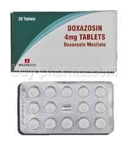

Doxazosin

- Alpha Adrenergic Blocker အမ်ဳိးအစားဝင္ ေဆးတစ္မ်ဳိး ျဖစ္ပါတယ္။
- ေသြးျပန္ေၾကာ၊ ေသြးလႊတ္ေၾကာေတြကို ေျဖေလ်ာ့ေစၿပီး ေသြးလြယ္လြယ္ကူကူစြာ စီးဆင္းဖို႔ လုပ္ေဆာင္ေပးပါတယ္။
- ဆီးႀကိတ္နဲ႔ ဆီးအိမ္ျပြန္ ႂကြက္သားေတြကိုလည္း ေျဖေလ်ာ့ေစၿပီး ဆီးသြားရ ပိုမိုလြယ္ကူေအာင္ ေဆာက္ရြက္ေပးပါတယ္။
ဘယ္မွာသံုးလဲ
ေသြးတိုးေရာဂါ
ဆီးႀကိတ္ႀကီးျခင္းေရာဂါ
တခ်ဳိ႕ အမ်ိဳးအစားေတြ (Cardura XL) ကိုေတာ့ ဆီးႀကိတ္ႀကီးတာအတြက္သာ အသံုးျပဳပါတယ္။
ဘယ္လို သံုးရမလဲ
- ဆရာဝန္ ညႊန္ၾကားခ်က္ရိွမွသာ သံုးသင့္ပါတယ္။
- ေဆးပမာဏကို တိက်စြာသံုးပါ။
- ေသာက္ေဆး အေနႏွင့္ အသံုးျပဳပါတယ္။
- ေသြးတိုးေရာဂါအတြက္ အသံုးျပဳႏိုင္ၿပီး ေရာဂါလကၡဏာ သက္သာသြားတဲ့အခါ ဆရာဝန္ညႊန္ၾကားခ်က္ မပါဘဲ မိမိသေဘာနဲ႔ မိမိမရပ္လိုက္ပါနဲ႔။
- စိုထိုင္းဆမမ်ားဘဲ အပူခ်ိန္မျမင့္တဲ့ ေနရာမွာထားသိုပါ။
ေဘးထြက္ ဆိုးက်ိဳးဘာေတြရွိလဲ
- ေဆးႏွင့္ဓာတ္မတည့္ေသာလကၡဏာမ်ား(ေရာင္ရမ္းယားယံျခင္း၊ အသက္ရွဴရခက္ျခင္း)
- ရင္ဘတ္ေအာင့္ျခင္း
- အသက္ရွဴၾကပ္ျခင္း
- ဗိုက္ေအာင့္ျခင္း
- မူးေဝျခင္း
- အမ်ိဳးသားမ်ားတြင္ လိင္တံမာေၾကာၿပီး နာက်င္ျခင္း စတာေတြ ခံစားရႏိုင္ပါတယ္။
ဘာေတြ သတိထားရမလဲ
မ်က္လံုးသူငယ္အိမ္ အေပၚ သက္ေရာက္မႈရွိတာေၾကာင့္ မ်က္လံုးခဲြစိတ္မႈ မလုပ္မီ ဆရာဝန္ကို ေဆးေသာက္ေနရင္ ႀကိဳတင္အသိေပးပါ။
ဒီေဆးနဲ႔ အလားတူေဆးေတြ (Prazosin, Silodosin) စတာေတြနဲ႔ မတည့္ရင္ ဒီေဆးနဲ႔လည္း ဓာတ္မတည့္ တာမ်ဳိး ျဖစ္ႏိုင္ေသာေၾကာင့္ အသံုးျပဳရင္ သတိထားပါ။
စအသံုးျပဳခါစမွာ ေသြးေပါင္က် မူးေဝႏိုင္တာေၾကာင့္ အထိုင္အထ ဂရုစိုက္ပါ။ အခ်ိန္အၾကာႀကီး မတ္တပ္ ရပ္ျခင္း၊ ထိုင္ေနရာမွစုတ္တရက္မတ္တပ္ရပ္ျခင္းတို႔ ေရွာင္ၾကဥ္ပါ။
ေသြးဖိအား မၾကာခဏ က်တတ္ျခင္း၊ အသည္းေရာဂါ၊ ဝမ္းခ်ဳပ္ျခင္း၊ အစာေျခလမ္းၾကာင္းဆိုင္ရာ ပိတ္ဆို႔တဲ့ေရာဂါေတြ ရိွရင္ဆရာဝန္ကို အသ္ိေပးပါ။
ကိုယ္ဝန္ေဆာင္ေတြမွာ ေဆးအသံုးျပဳဖို႔ အေၾကာင္းရင္းခိုင္လံုမွ ဆရာဝန္ညႊန္ၾကားခ်က္အတိုင္း အသံုးျပဳသင့္ပါတယ္။
ေဆးအာနိသင္ ဘယ္လိုရွိလဲ
- ဆီးေဆးမ်ား၊ ေသြးတိုးေရာဂါအတြက္သံုးတဲ့ တျခားေဆးေတြနဲ႔ အျပန္အလွန္သက္ေရာက္မႈ ရိွႏိုင္ပါတယ္။
- ပိုးသတ္ေဆးမ်ား
- စိတ္က်ေရာဂါအတြက္ေဆးမ်ား
- HIV ပိုးအတြက္သံုးေသာေဆးမ်ား
- အမ်ိဳးသားပန္းေသပန္းညိႇုးျခင္း အတြက္သံုးေသာေဆးမ်ား စသည္တို႔ တစ္ခုခုအသံုးျပဳေနရင္ ဆရာဝန္ကို ေျပာျပထားပါ။
ေဆးေသာက္လြန္ရင္ ဘာေတြျဖစ္မလဲ
- မူးေဝျခင္း
- မူးေမ့လဲျခင္းတို႔ ျဖစ္ႏိုင္ပါတယ္။
- ေဆးရံုေဆးခန္းအျမန္သြားေရာက္ရန္လိုပါတယ္။
- ေဆးေတြကို ဘယ္ေဆးမဆို ဆရာ၀န္ ဒါမွမဟုတ္ တတ္ကၽြမ္းနားလည္တဲ့ က်န္းမာေရး၀န္ထမ္းေတြရဲ႕ ညႊန္ၾကားခ်က္အတိုင္း တိတိက်က် ေသာက္သင့္ပါတယ္။
- မိမိသေဘာနဲ႔ေဆးရပ္လိုက္တာမ်ဳိး မလုပ္သင့္ပါဘူး။
- ေဘးထြက္ဆိုးက်ဳိး ျပင္းျပင္းထန္ထန္ ခံစားရရင္ေတာ့ ဆရာ၀န္နဲ႔တိုင္ပင္ဖို႔ လိုအပ္ပါတယ္။
Source– ေဒါက္တာခ်စ္စႏီၵေက်ာ္